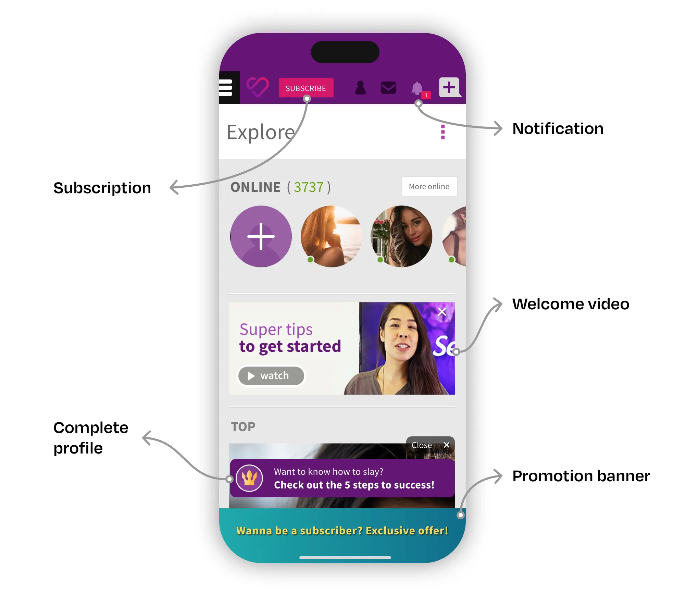
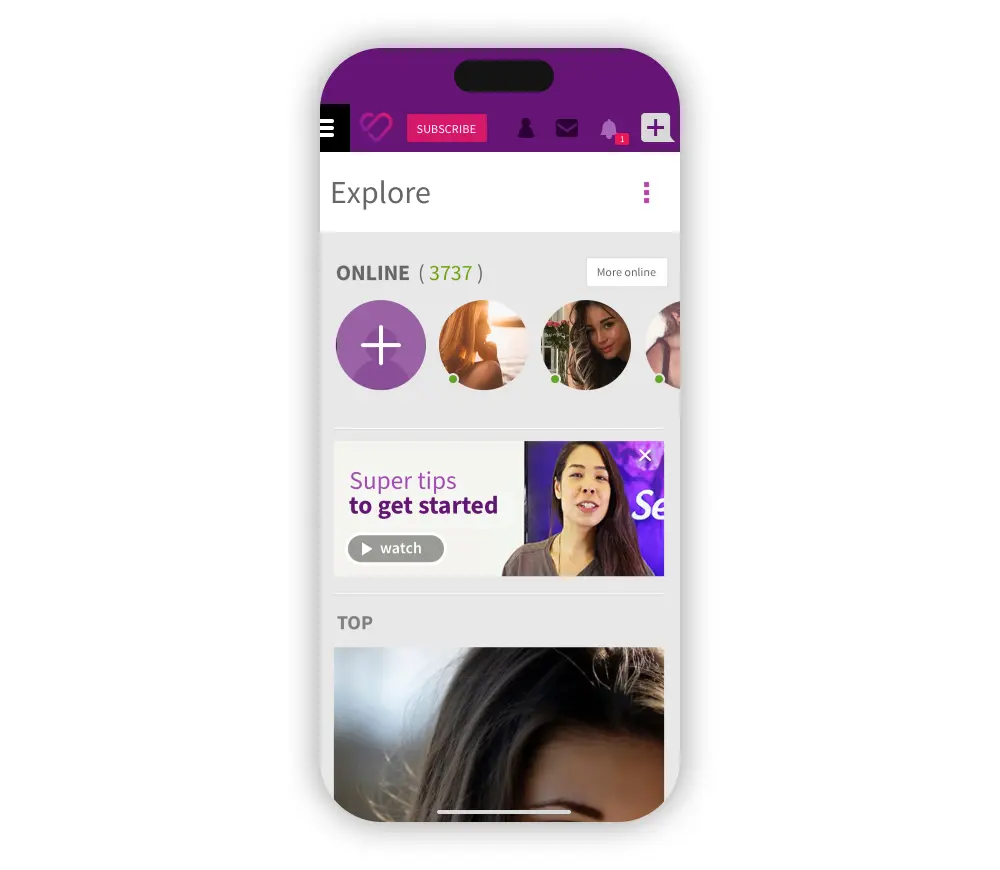
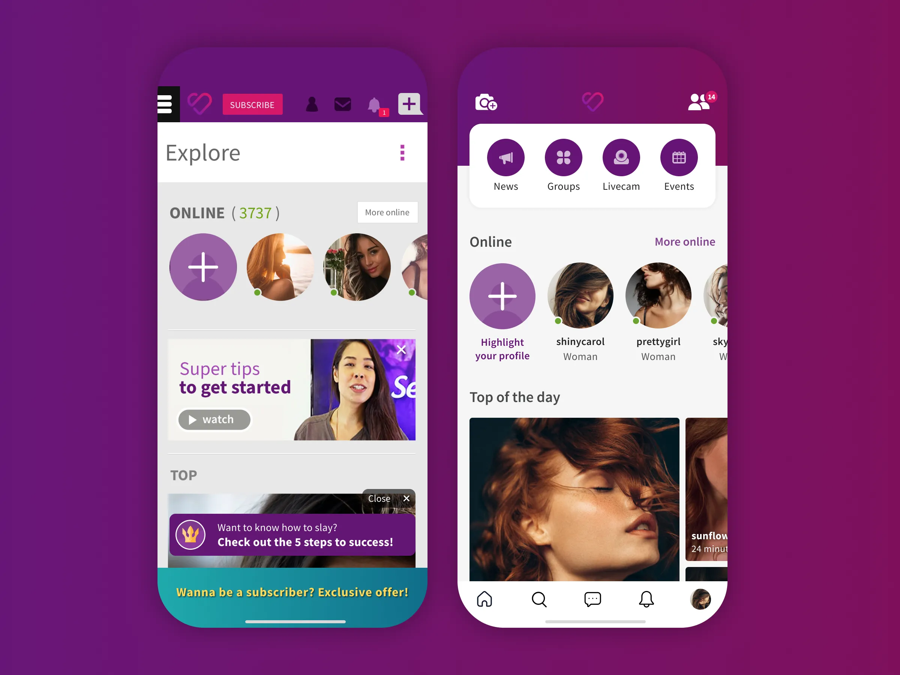
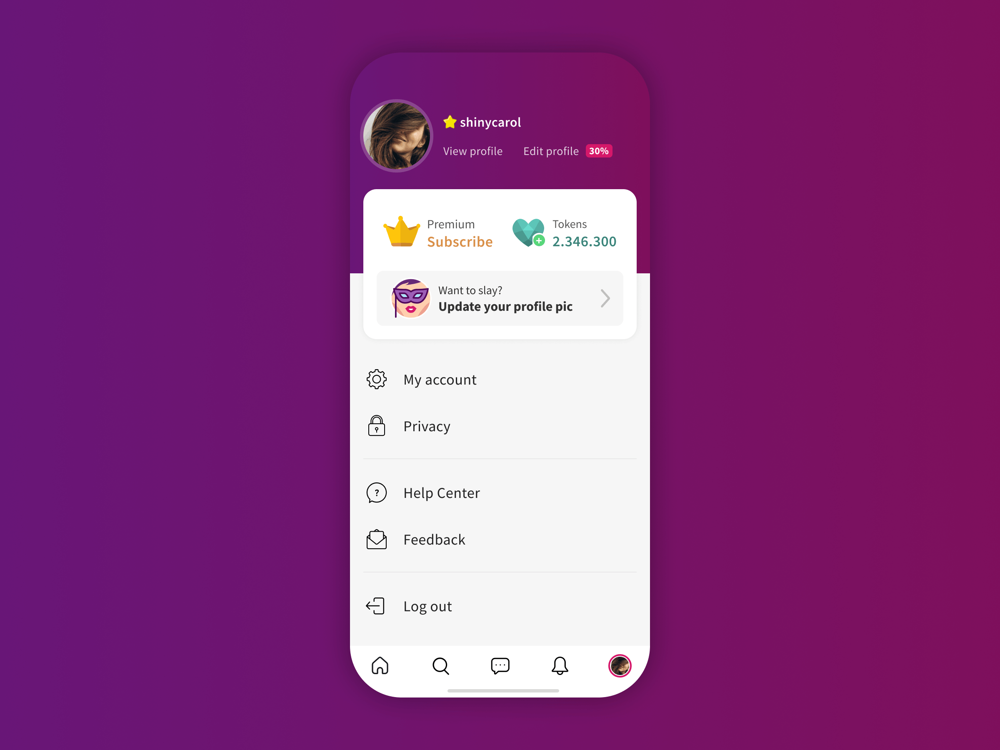

Summary
I led the complete redesign of SL web app, a product used by millions of Brazilians every day. We dramatically simplified the user experience, focusing on core interactions, speed, and simplified navigation. Making it beautiful in the process was just the icing on the cake.
---
About the company
SL is the biggest Brazilian community dedicated to the kinky lifestyle with more than 8 million users. The company believes that society still treats sexuality as taboo, so its purpose is to provide a safe and judgment-free environment for people to live their fantasies. SL users subscribe to its platform to meet and hook up with single individuals and couples from any part of the world with total respect, security, privacy, and no judgments.
---
Context
When I joined SL in November 2014, most of the access to our website came from desktop devices, corresponding to an average of 88% of daily traffic. At the time, our design team was already studying the mobile-first mindset, but we decided to stay focused on our desktop experience due to our small team and budget constraint.
Over time, we developed a stronger mobile vision, applying it to the new features we were launching. However, we had core modules in our application that were developed in the old times when the desktop was in command.
At the beginning of 2018, we reached a rate of 80% of mobile accesses. In addition, our team had already received lots of feedback from our users about how bad their mobile experience was. So in the middle of 2018, I started a research to understand how big this problem was for our customers, our business, and the new people who were joining the platform.
---
Understanding the problem
As the initial parameter for our research, we adopted the home page and the interactions generated from it as a key point for understanding the experience. Firstly because it's from there that the whole experience starts, for new and veteran users. Secondly, because a lot of the hypotheses generated by our team involved the interaction with this page. As research tools we've used contextual interviews with people who have never used the site, browsing analysis of veteran clients with Hotjar, Analytics data, and behavioral data.
The diversity of qualitative and quantitative data collected helped us put together a puzzle in which 6 pain points were identified:
---
Painpoint 1: Complex learning process
In my interviews with people who have never used SL, I've identified that first access to the platform is confusing and frustrating. All the interviewees reported the annoyance and the difficulty in dealing with numerous processes that ran in parallel when they board the platform.

---
Painpoint 2: Low value in home page content
By analyzing our users' interactions on Hotjar and events logged in Google Analytics, I noticed that new and veteran customers found low value on the content present on the homepage. Over 80% of the clicks were concentrated only on the first two content blocks.
Beside this, people who have never used the website reported hoping to find a more personalized experience on this page. According to them, this page should show _"people compatible with them"_ with whom it would be possible to get a date quickly.
Painpoint 3: Core features difficult to find
The biggest value we sell to our customers is finding compatible people. However, new users had a hard time finding the triggers to look for people of their interest.
When I questioned the interviewees about _"What can you do in SL?"_, few of them identified the key tasks that could be carried out on the site. Only one person was able to find the search tool. In fact, many important site features were hidden deep inside the hamburger menu.

Painpoint 4: Long page load time
All respondents reported discomfort with application performance. In our NPS survey, we had already identified a high volume of such complaints. For those interviewed, SL is generally slower and less enjoyable to browse than other sites they often use.
Painpoint 5: Low depth of navigation
By analyzing the flow of events recorded in Analytics and the usage recordings in Hotjar, we've identified that on mobile devices users were browsing 40% fewer pages per session than desktop devices. By observing this interaction, it was possible to identify the lack of triggers between modules that would allow the user to navigate for longer.
Painpoint 6: Annoying floating assistant
Right after users gets on the website there is a user assistance tool with tips to improve the evidence and success of the profile. Despite the effectiveness of tool conversion (75% of users interact positively with it), respondents reported a nuisance with it at the bottom of the page. As I mentioned earlier, the number of processes running at the same time may have contributed to this irritation. At first access, users felt much more motivated to explore the features of the site than to follow steps of something they didn't even know about.
---
Defining priorities
This research has brought me a number of concerns of the utmost importance to the product. Since we had a small development team, I had to choose which aspects of the problem we should tackle first. My decision was to start on two fronts:
1. Give evidence to the most important core features for the customer and the business. For the customer: find people — send a message — set up a date. For business: conversion into subscriptions, microtransactions, cohort retention, churn control.
2. The first step in simplifying the initial interaction of the client with the site, reducing the complexity and giving focus to the most important tasks.
---
Sketching and testing
Sketching brought me a lot of challenges and questions related to user interaction. My first objective was to prioritize and organize all the features in a way that it had a context and logic order to users. As can be seen in pain point 3, all the features were hidden inside the hamburger menu without hierarchy and meaning to the user.
I made a new round of data analysis in order to validate some hypothesis about on what frequency users interacted with some features in order to rearrange the experience without losing the connection between many processes that were running along the journey. Any change in the interface could impact extremely important business KPI's.
---
Usability tests
After refining the sketches, I could prepare a prototype to test with users. We spent a week interviewing and running usability tests with single individuals and couples carefully selected according to our different personas. Tasks were selected based on their importance to customer success, their impact on key business metrics, and the level of strangeness some changes in interface and information architecture could cause to the users.
---
Tasks
1. Access a photo on your profile
2. Find someone on the website that matches your criteria
3. Access the Groups page
4. Change your location to Campinas
5. Accept your friendship requests
6. Buy a subscription plan
7. Buy a Token package
8. Post a photo to your profile
9. Find the expiration date of your subscription
---
Results of the usability tests
The results proved that most of the users were able to complete the tasks with ease. In fact, reactions (including both verbal and non-verbal cues) to the prototype showed that they were confident in navigating the pages. Several of them also expressed their satisfaction at the simplicity of the interface and the facility of finding the usual features that they accessed frequently.
While our main concerns were in tasks such as _"Access your profile"_, _"Find a person"_ or _"Buy a subscription"_, there were minor hesitations only in distinguishing system notifications from friend requests notifications, although they were still able to differentiate it. In conclusion, we've validated all the key aspects we wanted and there was no need to perform a new round of tests.
---
A new simplified experience
As we discussed earlier, in the final interface I could semantically group elements of the interface according to its usage and logical order. The main challenge was to understand which features should be placed on the first level, in a way that the user could have fast access to it anytime in their navigation.
The Hamburger Menu has been discontinued and all the important modules now can be accessed with one single touch in the Home Page. All the elements present in the old menu were rearranged according to its meaning and importance to the user. In the bottom navigation bar, I selected the most important and recurrent features used by all of our personas. In the usability tests, this type of navigation has proved very efficient and comfortable, encouraging the users to interact more.
The UI had subtle changes in order to improve legibility and reduce complexity. The typeface acquired a darker black and a lighter weight and the background was brightened to provide greater visual comfort. Besides that, the buttons lost their shapes but gained contrast as their typeface became colored.

---
A brand new and convenient profile page
One of the biggest changes in the navigation was the new profile page. In this section, I organized all the features related to the user profile, account settings, and privacy options. In the old interface, all these elements were lost inside the hamburger menu and other areas of difficult access. I took great care on preserving some essential features:
1. For the business: The call to action for subscription and token purchase;
2. For the user: Access to public profile and profile edition.

---
Defining business KPI's
In order to define the success of our project, I defined some KPI's that must be followed after releasing. Each metric should be analyzed carefully to understand its impact on the business and the user experience. These were the chosen indicators:
---
Access metrics
- Sessions per user (per day, month)
- Average session duration
- Pages per session
---
Activity metrics
- Retention cohort
---
Conversion metrics
- Conversion rate
- Time to the first sent message
---
Custom metrics
- Engagement Score (Based on the activity level on the platform)
- Success Score (message response rate)
- Onboarding Key Metrics (Completed steps)
---
Next steps
By the time I left this project, it was under a test with a restricted group of beta testers so that the analysis of the KPIs could be made and feedback collected to make the necessary adjustments. Once the team validated all the key points of the project, a beta version would be released little by little to new users so that in a few months it could be offered to the entire customer base.